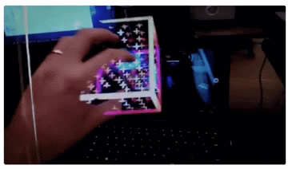

Leap Motion is a company that has always been focused on human-computer interfaces.
North Star is a full augmented reality platform that allows us to chart and sail the waters of a new world, where the digital and physical substrates exist as a single fluid experience.
It definitely is the next generation after the current product after magic leap. The videos released during the development phase is quite amazing and very futuristic. One of the main problems augmented reality currently faces is that of occlusion of items in the augmented world and the real world. Project North star seems to have over come this problem when the hand goes through the cub being held as shown in the gif below. And most of all it is open source and anyone can download and develop!
You can learn more about "Project North Star" here. The developer page can be accessed here.